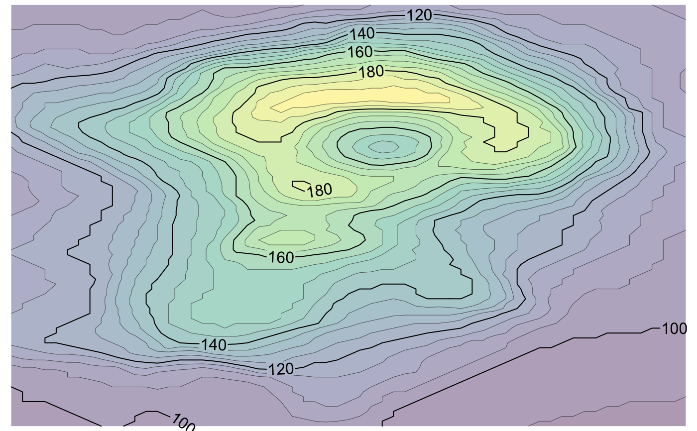

This function generates a grid grob that represents labeled isolines.
isolines_grob(lines, gp = gpar(), breaks = NULL, labels = NULL, margin = unit(c(1, 1, 1, 1), "pt"), label_col = NULL, label_alpha = NULL, label_placer = label_placer_minmax(), units = "npc")
| lines | Isolines, as produced by the |
|---|---|
| gp | Grid graphical parameters. Parameters applying to lines
(such as |
| breaks | Character vector specifying the isolines that should be
labeled. If |
| labels | Character vector specifying the labels for each break.
If |
| margin | Unit object of length 4 specifying the top, right, bottom, and left margins around each text label. The same margins are applied to all labels. |
| label_col | Color applied to labels. Can be used to override the
color provided in |
| label_alpha | Alpha applied to labels. Can be used to override the
alpha value provided in |
| label_placer | Function that controls how labels are placed along
the isolines. Uses |
| units | A character string specifying the units in which to
interpret the isolines coordinates. Defaults to |
See isobands_grob() for drawing of isobands. See label_placer_minmax() for
label placement strategies.
library(grid) viridis_pal <- colorRampPalette( c("#440154", "#414487", "#2A788E", "#22A884", "#7AD151", "#FDE725"), space = "Lab" ) x <- (1:ncol(volcano))/(ncol(volcano)+1) y <- (nrow(volcano):1)/(nrow(volcano)+1) lines <- isolines(x, y, volcano, 5*(19:38)) bands <- isobands(x, y, volcano, 5*(18:38), 5*(19:39)) b <- isobands_grob( bands, gp = gpar(col = NA, fill = viridis_pal(21), alpha = 0.4) ) l <- isolines_grob( lines, breaks = 20*(5:10), gp = gpar( lwd = c(.3, 1, .3, .3) ) ) grid.newpage() grid.draw(b)grid.draw(l)